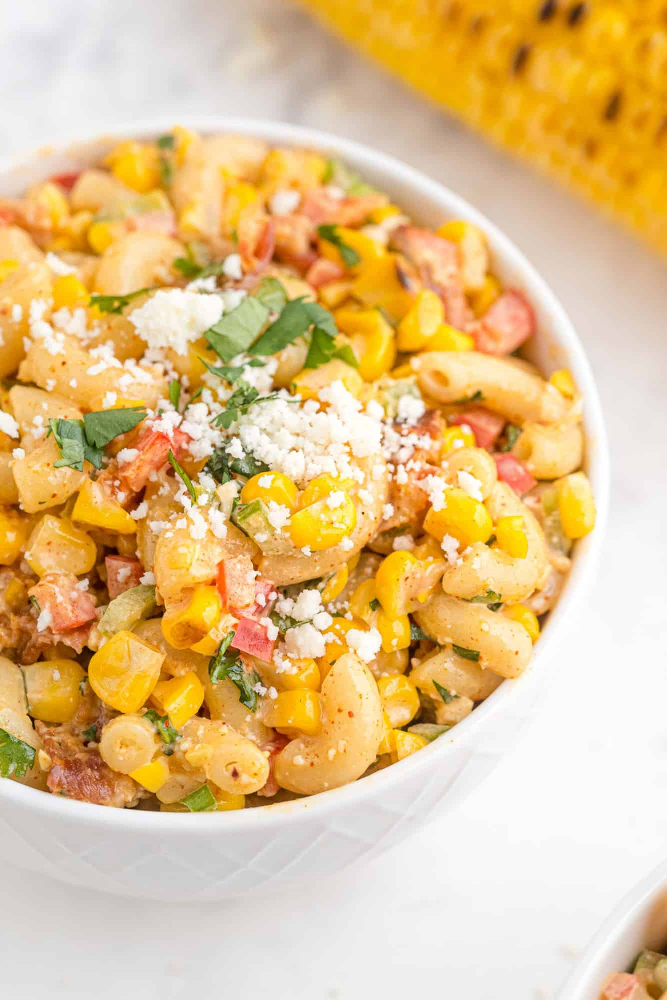

All the authentic flavors of “elote” are combined in this great tasting Mexican street corn pasta salad: grilled corn, mayonnaise, chili powder, and cotija cheese.
Recipe Overview
Why you’ll love it:
I mean…pasta, bacon, cheese, creamy dressing. How could you not love it?
How long it takes:
45 minutes
Equipment you’ll need:
grill or grill pan, large pot, large bowl, measuring tools
Servings:
10

What You Need
Pasta: Use a small pasta, such as rotini, farfalle, or macaroni. Whole wheat is fine, too.
Corn: For best flavor, buy fresh corn on the cob. There’s nothing like it! If fresh corn isn’t available, use good quality canned or frozen corn
Red Bell Pepper, Jalapeño Pepper, and Green Onions: This vegetable trio adds lots of crunch, color, and flavor to the pasta salad.
Fresh Cilantro: What’s Mexican food without cilantro? The bright herbal flavor complements the salad perfectly. If you’re not a fan, parsley is a good sub.
Bacon: I guess you could say the bacon is optional but why? It’s so good!
Cotija Cheese: Authentic Mexican street corn is rolled in this tangy sharp cheese. You definitely want it in your salad.